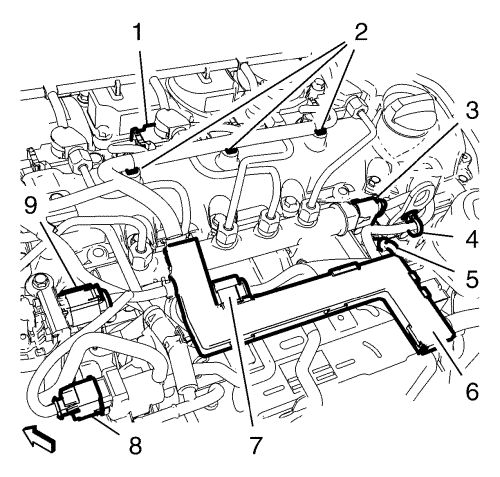
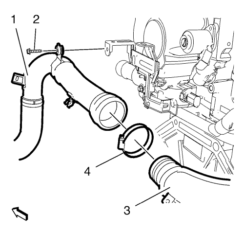
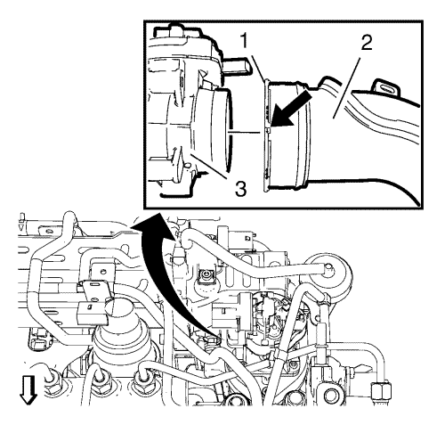
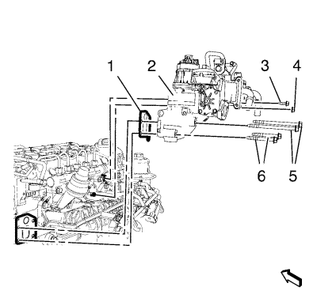

Sustitución del refrigerador de la válvula de recirculación de gases de escape
Procedimiento de desmontaje
- Desmontar la pantalla de protección del motor. Consultar Sustitución del protector del motor .
- Desmonte la bandeja de la batería. Consultar Sustitución de la bandeja de la batería .
- Elevar el vehículo y soportarlo de manera segura. Consultar Elevación y soporte en alto del vehículo .
- Vacíe el sistema de refrigeración. Consultar Drenaje y llenado del sistema de refrigeración .
- Desmonte el tubo de recirculación de gases de escape. Consultar Sustitución de la tubería de recirculación de gases de escape .
- Bajar el vehículo.
- Para vehículos con cambio manual: desemborne el cable de la palanca selectora y de la palanca de cambios del cambio. Consultar Sustitución de los cables de la palanca selectora y de la palanca de cambio del cambio manual .
Para vehículos con cambio automático: desemborne el cable de la palanca selectora de marchas del cambio automático. Consultar Sustitución del cable de la palanca selectora .

- Desemborne el enchufe del mazo de cables de la válvula solenoide de vacío (8).
- Desemborne el enchufe del mazo de cables de la válvula de recirculación de gases de escape (9).
- Desemborne el enchufe del mazo de cables de la válvula del actuador de admisión (7).
- Desemborne el enchufe del mazo de cables del sensor de presión del tubo de distribución de la inyección de combustible (3).
- Desemborne los 4 enchufes del mazo de cables de las bujías de incandescencia (5).
- Desemborne los 4 enchufes del mazo de cables de la válvula de inyección de combustible (1).
- Suelte los 4 clips del mazo de cables del motor (2, 4) de la tapa del árbol de levas.
- Suelte el conducto del mazo de cables del motor (6) hacia arriba a partir de los 3 soportes del refrigerador de recirculación de los gases de escape. Cuelgue el mazo de cables del motor a un lado.
- Desmonte el tubo de purga de aire del refrigerante del motor. Consultar Sustitución del tubo flexible de purga de aire del agua de refrigeración del motor → 2.0L Diésel LNP → 1.4L LDD, LUH y LUJ → 1.6L LXT, L2W → 1.6L LDE, LXV, 1.8L 2H0 y LUW → 2.0L Diésel LLW .
- Retire el tubo flexible de la bomba de vacío. Consultar Sustitución del tubo flexible de la bomba de vacío .
- Retire el tubo flexible de la válvula solenoide de control de vacío de la válvula de ajuste del colector de admisión. Consultar Sustitución del tubo flexible de la válvula solenoide de control de vacío de la válvula de ajuste del colector de admisión .
- Suelte el clip de retención del mazo de cables del motor del tubo flexible delantero de salida del refrigerador de aire de carga.
- Suelte el tubo flexible del respiradero del cambio del tubo flexible delantero de salida del refrigerador de aire de carga.

- Retire el tornillo del soporte del tubo flexible delantero de salida del refrigerador de aire de carga (2).
- Afloje la abrazadera que une el tubo flexible delantero de salida del refrigerador de aire de carga al tubo flexible trasero (4).
- Suelte el tubo flexible delantero de salida del refrigerador de aire de carga (1) y la abrazadera (4) del tubo flexible trasero de salida del refrigerador de aire de carga (3).

- Suelte los 2 clips de retención del mazo de cables del tubo flexible trasero de salida del refrigerador de aire de carga (2).
- Coloque una herramienta adecuada en la posición indicada (flecha) y gire el anillo de bloqueo (1) hacia la izquierda.
- Suelte el tubo flexible trasero de salida del refrigerador de aire de carga (2) del cuerpo de la mariposa (3).
- Retire el tubo flexible trasero de salida del refrigerador de aire de carga (2).
- Retire el tubo flexible de retorno del refrigerante del colector de recirculación de gases de escape. Consulte Sustitución del tubo flexible de retorno del refrigerante del colector de recirculación de gases de escape → 2.0L Diésel LNP.
- Retire el tubo flexible de alimentación de la refrigeración de la recirculación de gases de escape. Consultar Sustitución del tubo flexible de alimentación de la refrigeración de la válvula de recirculación de gases de escape .
- Retire el tubo de retorno de refrigerante del turbocompresor del refrigerador de la recirculación de gases de escape. Consultar Desmontaje de la tubería de retorno de refrigerante del turbocompresor .

- Retire la tuerca del refrigerador de la recirculación de gases de escape (5) y los 5 tornillos del refrigerador de la recirculación de gases de escape (3, 4 y 6).
- Retire el refrigerador de la recirculación de gases de escape (2) y la junta (1).
Procedimiento de montaje
- Monte el refrigerador de la recirculación de gases de escape (2) y una junta NUEVA (1).
Precaución:Consulte Precaución con las fijaciones en la sección Prólogo.
- Monte los 5 tornillos del refrigerador de la recirculación de gases de escape (3, 4 y 6) y la tuerca del refrigerador de la recirculación de gases de escape (5) y apriételos a 25 N·m (18 lib. pie).
- Monte el tubo de retorno de refrigerante del turbocompresor en el refrigerador de la recirculación de gases de escape. Consultar Desmontaje de la tubería de retorno de refrigerante del turbocompresor .
- Monte el tubo flexible de alimentación de la refrigeración de la recirculación de gases de escape. Consultar Sustitución del tubo flexible de alimentación de la refrigeración de la válvula de recirculación de gases de escape .
- Monte el tubo flexible de retorno del refrigerante del colector de recirculación de gases de escape. Consulte Sustitución del tubo flexible de retorno del refrigerante del colector de recirculación de gases de escape → 2.0L Diésel LNP.
Nota: Asegúrese de que el anillo de seguridad (1) está cerrado.
- Monte el tubo flexible trasero de salida del refrigerador de aire de carga (2) en el cuerpo de la mariposa (3).
- Fije los 2 clips de retención del mazo de cables en el tubo flexible trasero de salida del refrigerador de aire de carga (2).
- Monte el tubo flexible delantero de salida del refrigerador de aire de carga (1) y la abrazadera (4) en el tubo flexible trasero de salida del refrigerador de aire de carga (3).
- Monte el tornillo del soporte del tubo flexible delantero de salida del refrigerador de aire de carga (2) y apriételo a 9 N·m (80 lib. pulg.).
- Apriete la abrazadera que une el tubo flexible delantero de salida del refrigerador de aire de carga al tubo flexible trasero (4) a 4 N·m (35 lib. pulg.).
- Fije con clips el tubo flexible del respiradero del cambio al tubo flexible delantero de salida del refrigerador de aire de carga.
- Fije el clip de retención del mazo de cables del motor al tubo flexible delantero de salida del refrigerador de aire de carga.
- Monte el tubo flexible de la válvula solenoide de control de vacío de la válvula de ajuste del colector de admisión. Consultar Sustitución del tubo flexible de la válvula solenoide de control de vacío de la válvula de ajuste del colector de admisión .
- Monte el tubo flexible de la bomba de vacío. Consultar Sustitución del tubo flexible de la bomba de vacío .
- Monte el tubo de purga de aire del refrigerante del motor. Consultar Sustitución del tubo flexible de purga de aire del agua de refrigeración del motor → 2.0L Diésel LNP → 1.4L LDD, LUH y LUJ → 1.6L LXT, L2W → 1.6L LDE, LXV, 1.8L 2H0 y LUW → 2.0L Diésel LLW .
- Coloque el mazo de cables del motor en el vehículo.
- Fije con clips el conducto del mazo de cables del motor (6) a los 3 soportes del refrigerador de recirculación de los gases de escape.
- Fije los 4 clips del mazo de cables del motor (2, 4) a la tapa del árbol de levas.
- Emborne los 4 enchufes del mazo de cables de la válvula de inyección de combustible (1).
- Emborne el enchufe del mazo de cables del sensor de presión del tubo de distribución de la inyección de combustible (3).
- Conecte los 4 enchufes del mazo de cables de las bujías de incandescencia (5).
- Emborne el enchufe del mazo de cables de la válvula del actuador de admisión (7).
- Emborne el enchufe del mazo de cables de la válvula de recirculación de gases de escape (9).
- Emborne el enchufe del mazo de cables de la válvula solenoide de vacío (8).
- Para vehículos con cambio manual: emborne el cable de la palanca selectora y de la palanca de cambios desde el cambio. Consultar Sustitución de los cables de la palanca selectora y de la palanca de cambio del cambio manual .
Para vehículos con cambio automático: emborne el cable de la palanca selectora de marchas desde el cambio automático. Consultar Sustitución del cable de la palanca selectora .
- Elevar el vehículo
- Monte la tubería de recirculación de gases de escape. Consultar Sustitución de la tubería de recirculación de gases de escape .
- Llene el sistema de refrigeración del motor. Consultar Drenaje y llenado del sistema de refrigeración .
- Bajar el vehículo.
- Monte la bandeja de la batería. Consultar Sustitución de la bandeja de la batería .
- Monte el protector del motor. Consultar Sustitución del protector del motor .
| © Copyright Chevrolet. All rights reserved |